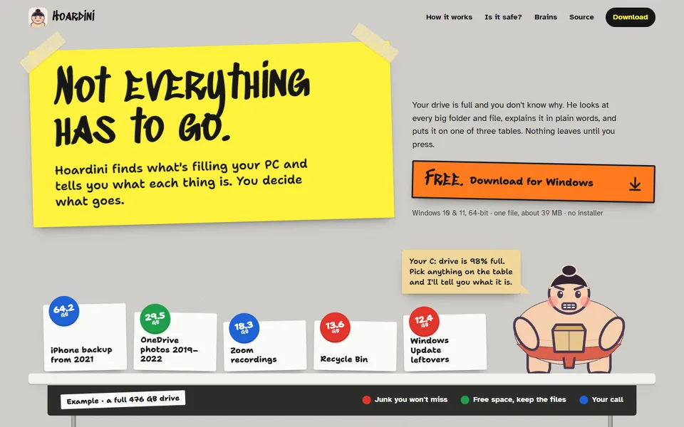
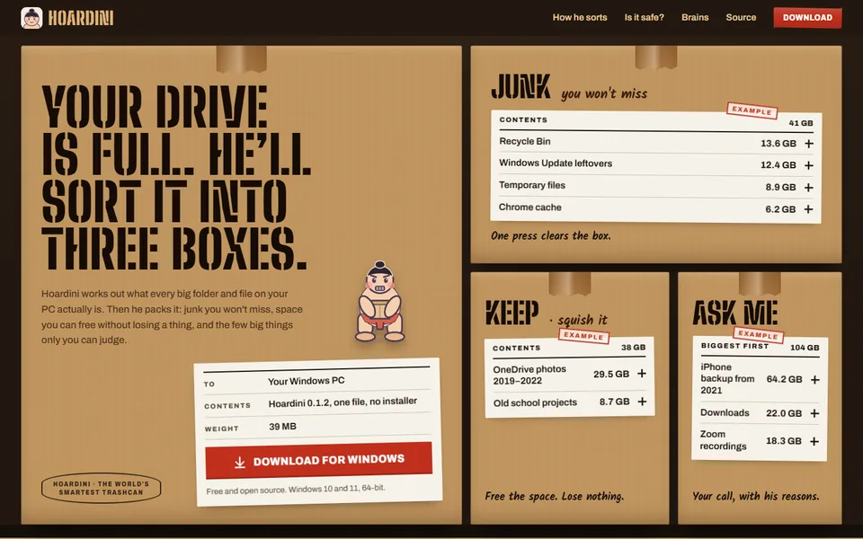
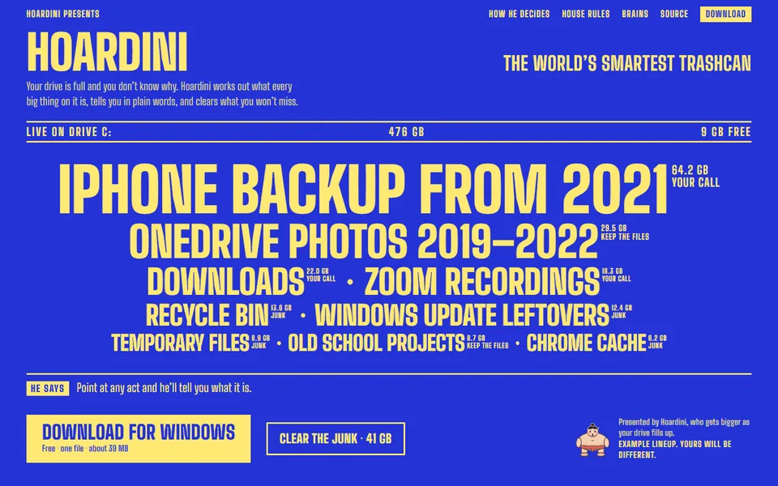
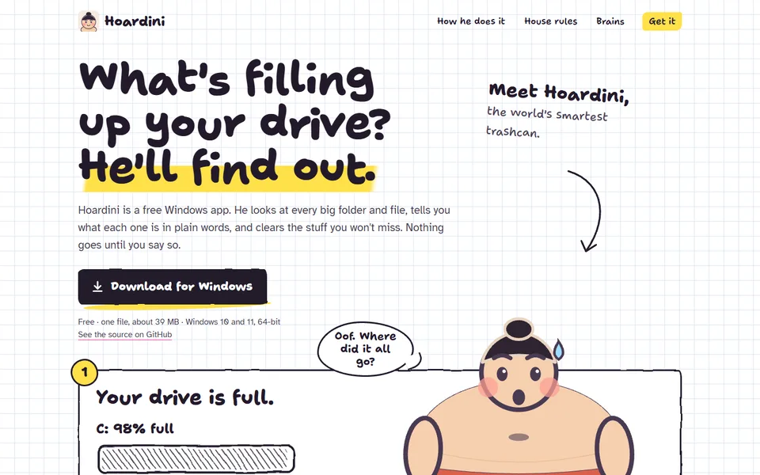
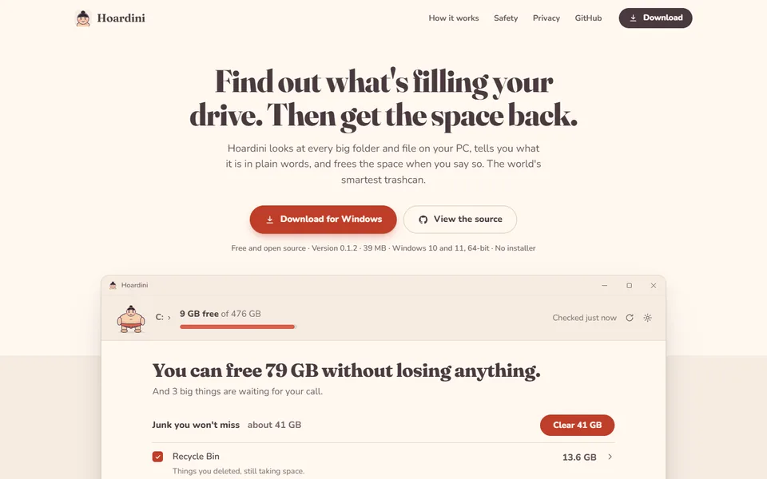

Hoardini site: pick one
Five directions for cyronius.github.io/hoardini/. Each one is a full page that works at phone width. Click a picture to open it. All drive data is an example.
-

1. Yard Sale
A Saturday driveway sale. "Not everything has to go." Big items sit on folding tables with colored dot stickers that show their size. Hoardini runs the sale, and you decide what goes.
Try it: the "Three tables" section lets you clear or hold items. The sumo gets slimmer as space comes back.
Open Yard Sale -

2. Moving Day
Kraft cardboard boxes with stenciled labels, packing tape, and shipping-label packing lists. Three boxes are the three groups: Junk, Keep (squish it), and Ask me. The download sits on a shipping label.
Try it: empty the boxes in the demo, and click a packed item to read his note.
Open Moving Day -

3. The Lineup
A music-festival lineup poster. Your drive's biggest things are the headliners, set bigger by size. One blue, one yellow, one typeface. It has the boldest look of the five, with almost no pictures.
Try it: point at a name to read his explanation, then press "Clear the junk".
Open The Lineup -

4. How He Does It
A hand-drawn comic on graph paper that explains the app in panels. The sumo starts huge and worried because the drive is full. He looks, he sorts, and he ends slim and happy. Arrows and highlighter draw in as you scroll.
This one is the easiest for a non-technical reader to follow.
Open How He Does It -

5. Classic (the safe choice)
A standard, polished product page in the app's own look: the same fonts and colors, with dark mode. A working copy of the app screen sits under the headline.
Try it: press "Clear 41 GB" in the app copy. It looks like most good app sites.
Open Classic